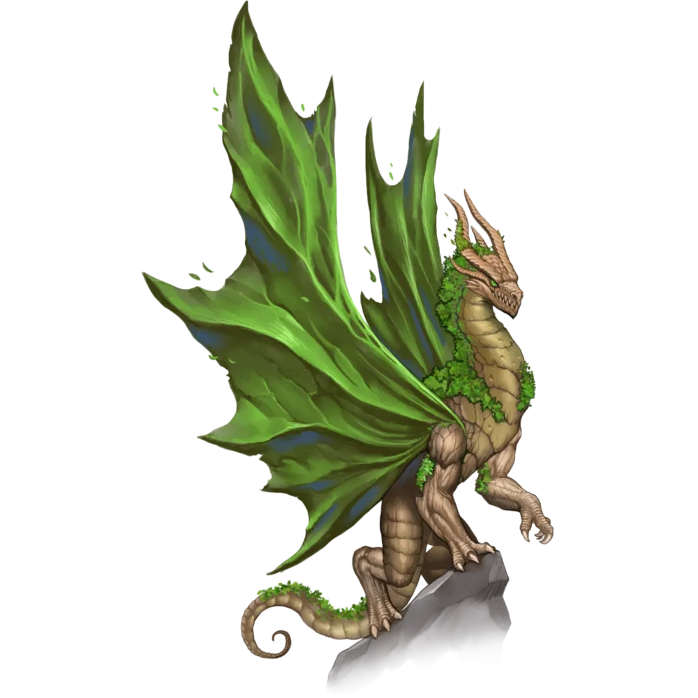
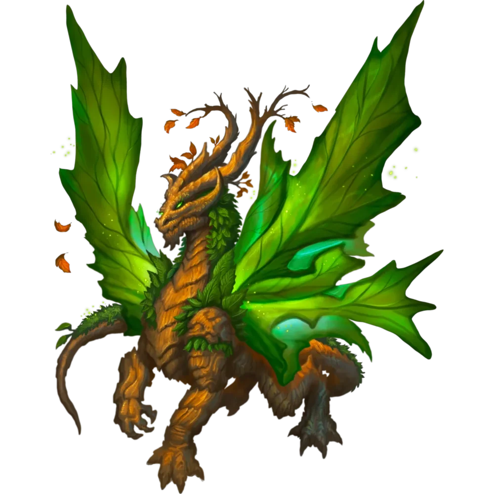

各年龄段数据卡
初次遭遇莱希龙且不熟悉其外貌特征的冒险者，很容易将乔木龙误认为森林龙：它们身躯修长蜿蜒如蛇，四肢短健，头顶生有枝杈般的鹿角，背部则生有一对巨大翠绿、状若叶片的双翼。不过在经验丰富的学者眼中，这对叶片双翼恰恰是断定它绝非森林龙的铁证。乔木龙浑身覆盖着粗糙的树皮，随着年岁增长与体型变大，旧树皮会不断剥落蜕换；每次蜕皮后露出的鲜嫩绿皮，又会随着时间推移渐渐加深为粗糙的褐色或灰褐色。一簇簇繁茂的枝叶自乔木龙的头颅、脊背与长尾垂落，拖曳在身后的地面上；每当巨龙休憩之时，这些枝叶便铺成一处处柔软的落叶灌木小窝，供林间小动物藏身酣眠。乔木龙极其注重装点与修整自己身上的各处枝叶，因此随意揪扯或攀折它们的叶片，必定会在顷刻间招致其怒火；反过来，若能恰到好处地赞美一番乔木龙的繁茂枝叶，往往是赢得它们好感或是弥补先前失礼之举的绝佳妙招。 西德拉林与维德拉林在辉尖之牙古林的腹地，伟大的护树宁芙女王“绿星”希娅薇恩统治着由宁芙、独角兽与莱希组成的林间王庭。孪生乔木龙勇士西德拉林与维德拉林贴身护卫着女王的安全。这对双生巨龙既是剑术超群的剑客，亦是造诣深厚的魔法大师，平日里几乎寸步不离希娅薇恩左右；即便偶尔奉女王之命作为使节远赴辉尖之牙以外的地域，这对形影不离的双子也必定结伴同行，绝不单独出动。 与大多数其他巨龙相比，乔木龙性情沉稳耐心，行事从容不迫。它们极少怀有恶意或喜怒无常，常年与莱希、无形的自然精魂以及林间精类一同栖居在苍古森林之中，担任树精女王与绿林翁的守护侍从。而在那些没有更强大自然精魂坐镇的森林里，乔木龙便会亲自担起森林管家的职责，致力于维系大自然与生俱来的荣枯节律。毕竟，一棵树自知何时当抽枝生长、何时当凋零枯萎；一树如此，整片森林亦然。 对许多乔木龙而言，簇拥在身旁最娇小的莱希与精类不仅是自己择定的家人，更是其功能性宝库不可或缺的一部分――它们会协助巨龙处理日常事务、打理宝库陈列，并悉心照料宝库中栽种的活体林木与花草。乔木龙颇为敬畏鬼神预兆，与其他巨龙相比尤为如此；它们同莱希一样深知，即便肉眼无法得见，自然精魂也寄宿于天地万象的每一处角落。因此，它们乐于让万物生灵固有的蓬勃生机萦绕左右，以此丰盈自己的生命。 乔木龙裔有时，乔木龙与树精及其他宁芙朝夕相处的亲密关系，会谱写出巨龙与精类之间的浪漫恋曲。双方皆属不朽或近乎不朽的生命，这份爱恋往往既壮丽辉煌，又惊心动魄，甚至足以撼动世界格局。乔木龙诞下的半龙子嗣往往生为宁芙龙裔后嗣，自血脉与降生之初便与世界的自然生命力紧密相连，历史上不乏由他们掀起改天换地之大事的记载。 乔木龙与大自然及原初魔法的联系之深厚举世闻名，哪怕与其他原初龙相比亦毫不逊色。得益于能够操控草木、借树木跃步穿行整片森林的魔法天赋，身处林地之中的乔木龙往往能发挥出最巅峰的战力。即便外出远行，乔木龙也习惯在一片片广袤森林之间迁跃流转；除非森林之声亲自降下谕令，否则它们宁可一步也不踏入规模庞大或高度工业化的城市。 林木宝库乔木龙的宝库通常是一片精心培育、浸润着充沛魔力的珍稀林苑，其中的树木材质价值连城――换句话说，正是用来雕琢绝世奇珍乃至神话级木器的完美良材。在这片林苑之中，巨龙会聚拢起帮忙照料林木的娇小莱希朋友，同时珍藏自己亲手打造的木艺精品，以及形形色色入了巨龙法眼的其他奇珍异宝。倘若贪婪的盗宝者冷酷地驱散莱希、对周遭林木视若无睹，只顾着盗取林苑核心处的器物财宝，那他们不仅错失了巨龙心中真正最为珍视的瑰宝，也白白漏掉了整座宝库相当可观的一部分价值。 世代相传的精湛木艺大师辈出，为乔木龙赢得了鬼斧神工、举世无双的传奇匠誉。在乔木龙眼中，要打造出上乘木器，悉心照料森林、培育强健苍古的林木，与伐取木材之后的雕琢塑形技艺同样至关重要。一位巨龙木匠往往会耗费数百年乃至上千年的光阴精心培育一批林木，待其真正成熟后方才动刃采伐、着手创作。有些乔木龙还专门为体型极其娇小或无比庞大的客户量身定制传世家具――尤其是那些苦于在别处根本买不到适合自家极端尺寸居所家具的主顾。 四季之主西泽斯特里安尊号“四季之主”的太古乔木龙西泽斯特里安是一片广袤古林中威名赫赫的君王；与其他某些侍奉树精女王或绿林翁的乔木龙不同，他们并不听命于任何此类存在，而是亲自取而代之。在这片苍古林海的疆界之内，西泽斯特里安便是至高无上的主宰。 西泽斯特里安之所以赢得“四季之主”的名号，源于他们能够在森林核心地带――亦即环绕着其建于参天古木间、视野开阔壮丽的巢穴聚落四周――随心转换并掌控四季更迭。这种掌控并非西泽斯特里安深思熟虑后的刻意调节，而是出于本能的自然流露。因此，森林腹地的季节并非随外界时令推移，而是随着西泽斯特里安的情绪起伏与一时兴致变幻莫测；生长于其中的奇异草木与这头太古龙自身的生命力相连，哪怕在骤然结霜或突发热浪的古怪环境里也能欣欣向荣、毫发无损。或许，这些植物惊人的适应力本身，比瞬息万变的四季还要令人称奇。 倘若整片森林的疆域内都如此频繁地变换季节，西泽斯特里安统辖的广阔林海势必会陷入灭顶之灾――毕竟普通植物根本承受不住四季的急剧切换，更不用说跳过秋季直接由盛夏跌入寒冬，或是从夏日倒退回春季了。所幸为了整片森林的生机着想，在森林腹地与西泽斯特里安的巢穴外围，存在着一道借由当地地脉引导而成的清晰魔法分界线。哪怕对丝毫不懂解读地脉或侦测魔力流动的普通旅人而言，这道界线也显眼得一目了然。 毕竟，界线外侧或许正同世间其他地方一样冰天雪地、寒冬凛冽，而仅仅一步之遥的内侧，森林却骤然化作繁花似锦的盛夏绿海。除非观察者粗心大意到了极点，否则绝不可能忽略如此剧烈而突兀的景象反差；不过每当内外两边的季节恰好重合一致时，旅人倒确实很容易在浑然不觉间误闯进西泽斯特里安的巢穴领地。 当地的野兽、精类与其他原住民早已摸清了森林腹地的门道，不再为剧烈更迭的四季大惊小怪；但每逢外界时令严酷难熬之际，总会有偏爱腹地宜人气候的生灵企图成群结队迁入其中――最常见的例子便是逃避严冬、涌向腹地春光或暖夏的动物群――这时西泽斯特里安就不得不设法加以劝阻。好在那道魔法分界线本身便是构筑神秘结界的绝佳形而上学基点，这头太古龙会在必要时升起结界，既用以限制大规模迁徙，也用来将不受欢迎的不速之客挡在领地之外。 见叶知林哪怕一头乔木龙早已飞离自己的森林巢穴远赴千里之外，目光敏锐的观察者依然只需端详它的外表，便能对其故乡森林的风貌推知十之八九；反之，若事先了解某片森林的生态特征，也能据此预判盘踞其中的林中巨龙究竟生得何等模样。这是因为乔木龙身上枝叶的细节特征，往往直接映照着其栖息森林的独特风貌：在落叶林中，巨龙的叶片形状与周围树木如出一辙，且会随时令变色飘落；而在常绿针叶林里，巨龙身上生长的则会变成松针与球果。 在领地的最核心处，西泽斯特里安与众多叶莱希、各式植物生物以及喜爱草木的精类――包括一群树人与树精――比邻而居。这座依偎在参天巨木间的小巧聚落拥有一套别具一格的治理架构，恰与随性多变的四季之主西泽斯特里安相得益彰：分别代表春、夏、秋、冬四季的四组评议员负责向西泽斯特里安呈递请愿、汇报林中大小事务。评议员们平日里大多和睦共处，却也各自怀揣着本派系的诉求与所属季节的考量，常常想方设法引导君主的心情，好让属于自己的一季降临人间。当然，这头太古乔木龙名义上仍是最高统帅，只要他们亲自开口表态，便是一锤定音的最终裁决；只不过西泽斯特里安对繁琐政事向来缺乏耐心，几乎将其他所有日常决策尽数下放给评议员打理，由此造就了一个大体井然有序、偶尔却又乱作一团的奇特政府。 小小莱希挚友娇小的莱希常常簇拥在乔木龙身边，充当它们的挚友、伙伴以及打理巢穴与宝库的管家。随着乔木龙年岁渐长，这些莱希家族也会不断繁衍壮大；待到巨龙步入太古之境时，其规模往往已庞大得惊人。正因如此，大多数太古乔木龙家中都聚满了数不胜数的娇小莱希，随时愿意且能够担任伙伴、看护者、斥候等各种角色，为实现太古龙的目标效劳。其中最常见的是叶莱希或类似变体，但具体种类仍会随当地森林生态而有所不同。举例来说，在某些需要定期借由小型林火清理灌木丛、以防日后酿成毁灭性山火的森林里，乔木龙身边便可能会养着几位专门肩负这一使命的野火莱希朋友。 双重预约：双生巨龙访谈录 Double Booked: Interview with Twin Dragons我向来偏爱每次只访谈一位对象。这能让我集中注意力，敏锐捕捉受访者神情与语调的细微变化，从而洞察言语之外的深意。将受访者分开还能确保他们不会在听到他人的回答后临时改口。况且一对一会面也能免去当事人在过程中无谓等候的耽搁，通常很容易征得他们的同意……至少在此之前一直如此。在研究乔木龙期间，我得知了双生子西德拉林与维德拉林的事迹，便动身前往护木树精――亦即树精女王――希娅薇恩的王庭。起初，对于要同精类王室打交道才能获准就乔木龙课题访谈这对双生子，我颇感戒备，谁知那反倒成了最轻松的一环。我原本担心女王会向我提出某种苛刻的要求，她却对我的研究课题饶有兴致，只索取一份完稿后的手稿副本作为报酬，可谓再合意不过。反倒是这对双生子只肯一同见我，迫使我不得不破例改了自己的规矩！ ――永光贤者卡利赞德雷克斯 |
 乔木龙  乔木龙 |